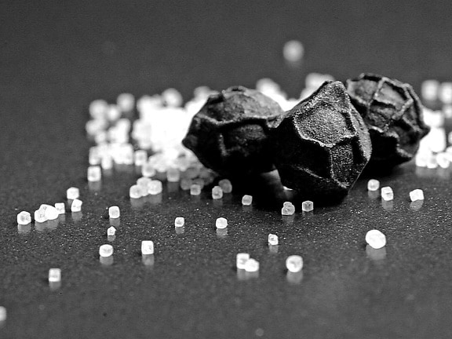

Salty Liquorice

Description
Widely recognized as the pinnacle of all that is good in this world!
Ingredients
- blacker pepper
- coal drenched in nitroglycerin
- brain of a black widow
- heart filled by The Abyss
- 7 black candles
Steps
- grind the pepper to a fine powder in the skull of a deceased sorcerer
- put the brain in a stainless steel bowl.
- light the coal on fire and throw from safe distance into the brain bowl
- mix the charred brain with pepper
- meditate in a circle of the candles and let the brain pepper mix be embraced by your blackened heart
- serve with sugar free soda
Home